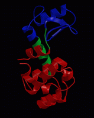
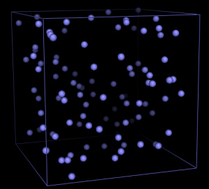
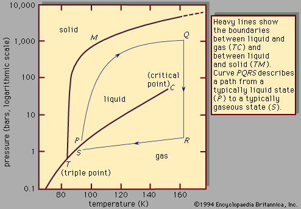

Practical 1: Introduction to molecular dynamics simulations

A. Introduction
Often it is necessary to understand the dynamics of a biomolecule in
order to understand its function. For proteins, much information can
usually be derived from the structure, or even based solely on the
sequence, but the detailed functional mechanism often includes a
structural transition or atomic fluctuations of the protein or
substrate that can only be understood if the underlying atomistic
dynamics are known in detail. The functional dynamics
of proteins typically take place on a picosecond to millisecond
timescale. Unfortunately, there are hardly experimental techniques
available with a high enough time and spatial resolution to follow the
atomistic motions step by step, in order to be able to view proteins
"in action", like under a microscope. Therefore, computer simulations
of the atomic motions are the methods of choice to study biomolecular
dynamics. Such simulations allow insights into the dynamics involved
in e.g. enzyme catalysis, molecular motors, molecular transport, or
molecular recognition, in atomic detail. Today we will learn how to
set up such a so-called molecular dynamics simulation, first on a
simple system (argon gas), after which we will turn to a real protein.
Go back to Contents
B. MD simulation of argon
As a first case study, we consider the dynamics of Argon gas. Argon
is a noble gas, characterised by a high degree of inertness (i.e. it
is chemically relatively unreactive). Physically, it is a relatively
simple compound, as it is mono-atomic both as gas and as fluid (no
covalent bonds that form molecules) and because it is apolar.
Therefore, it can be modeled as a neutral compound. Concerning the
"force-field", as it has been introduced during the lectures, it means
that in argon the only relevant force-field terms are the
Pauli-repulsion (that prevent atoms to overlap) and London-dispersion
(induced dipole-dipole interactions), which together are described by
a Lennard-Jones potential. Hence, in simulation jargon, Argon and
other noble gases are also refered to as Lennard-Jones fluids.
The simulations will be carried out with the GROMACS simulation package. On the
GROMACS homepage you can find both
the software and documentation (online reference and paper manual).
To run a simulation, three input files are usually required:
- a structure file, containing the atomic coordinates of the system
to be simulated
- a "molecular topology", containing the atomic simulation
parameters (force-field) and a description of the bonds, bond angles,
etc (if any) of the simulation system
- the simulation parameters: type of simulation, number of steps,
simulation temperature, etc.
Go back to Contents
C. Condensation and boiling of Argon

For the Argon simulations, three files have already been
prepared. Download argon_start.pdb,argon.top and md.mdp to your local working
directory without changing the filenames. Please feel free to
have a look at these files (on the command prompt, you can open these
files with any of the following programs: more, less, xedit, emacs, vi,
kate).
Gromacs uses the preprocessor grompp to collect the data from
the three input files, check the internal consistency, and write one
unified input file, topol.tpr On the command prompt in a linux
terminal or shell, type:
gmx grompp -f md.mdp -c argon_start.pdb -p argon.top
Please note that the commands in bold print can be easily transferred to the
command prompt with copy-and-paste (select text by dragging the mouse over it
with the left mouse button pressed, and paste by pressing the middle mouse
button).
Carefully check the output to see if any errors or warnings ocurred.
Note that, since we didn't explicitly specify a name for the output
file, the default name of topol.tpr was used.
If everything was OK, then start the simulation:
gmx mdrun -s topol.tpr -v -c argon_1ns.gro -nice 0
As mdrun says, 500,000 MD steps are carried out, each of 2 femtoseconds, making
a total of 1 nanosecond. Do a
ls -lrt
to see which files were written by mdrun. We see the following files:
- traj_comp.xtc - the trajectory (coordinates) to be used for analyses
- traj.trr - the coordinates, velocities and forces
- state.cpt - state of the system to be used for a restart in case of a crash
- ener.edr - energies
- md.log - a LOG file of mdrun
- argon_1ns.gro - the final coordinates of the simulation
The first analysis step during or after a simulation is usually a
visual inspection of the trajectory. For this we will use vmd. Other possibilities would be
Pymol, or
gOpenmol.
vmd argon_start.pdb traj_comp.xtc
Two windows (main and display) are opened. Show the simulation box typing "pbc box" in the console. Select the "Graphics" menu in the "Main" window, click "Representations", and then change the "Drawing Method" to "VDW".
Now click the "play" button (on the lower-right corner of the "Main" vmd window). If the movie displays too fast, change the movie speed with the "speed" button. Change the view by moving the mouse over the "Display" vmd window, with the left mouse button pressed, and zoom in and out by scrolling the middle mouse button. Close the "Main" window to exit vmd.
We have simulated Argon at 100K, which is above
the boiling point, so we have simulated argon gas. Before we continue,
rename traj_comp.xtc so that we can easily find it back later:
mv traj_comp.xtc gas.xtc
In the next step,
we are slowly going to cool down the system (simulated annealing), to
see if we can simulate the condensation to liquid Argon. For this,
download anneal.mdp and start grompp with:
gmx grompp -f anneal.mdp -c argon_start.pdb -p argon.top -maxwarn 2
Now start the annealing simulation:
gmx mdrun -c argon_anneal.gro -nice 0
(note that we do not need to specify "-s topol.tpr" - as mdrun needs a
tpr file to run, it will automatically search for the default
filename: topol.tpr. Also note, that, although we now write to the
same trajectory files as before, the old files are not overwritten,
but are backed up automatically).
Check the result using pymol. To do so, we first need to convert the trajectory to PDB
format:
gmx trjconv -s -f traj_comp.xtc -o traj.pdb
and select "0". Then view the trajectory with:
pymol traj.pdb
On the white command prompt in pymol, type:
show spheres
show cell
and press the "play" button on the bottom-right of the main pymol
window. Close pymol.
Do you see the formation of liquid argon?
Now analyse the energies and temperature from the simulation:
gmx energy -o temperature.xvg
and select "8" for the temperature (and "0" to stop the selection).
Watch the result with:
xmgrace temperature.xvg
It can be seen that the actual temperature during the simulation
indeed monotonously decreases as the simulation progresses. Now
analyse the potential energy:
gmx energy -o potential.xvg
and select "4" (and "0" to stop the selection).
Watch the result with:
xmgrace potential.xvg
Question:
Why is there a drop in the potential energy?
Question:
What is the boiling temperature of Argon?
Now repeat the annealing simulation, but extend the length of the
simulation by a factor of five. Do this by modifying the following
lines in "anneal.mdp" (open "anneal.mdp" in your favourite editor,
like xedit, nedit, kate or emacs):
nsteps = 2500000
annealing_time = 0 5000
and save "anneal.mdp". And run the simulation:
gmx grompp -f anneal.mdp -c argon_start.pdb -p argon.top -maxwarn 2
gmx mdrun -c argon_anneal.gro -nice 0
and analyse like above with gmx energy and xmgrace.
Question:
Why is the final potential energy lower than in the previous simulation?
Question:
What is the boiling temperature this time? Why is the apparent boiling point higher than in the previous simulation?
Now, let us simulate the boiling instead of condensation of argon. For
this, download heatup.mdp and start the
simulation:
gmx grompp -f heatup.mdp -c argon_anneal.gro -p argon.top -maxwarn 2
Note that we use the final structure of the previous simulation as a
starting configuration.
gmx mdrun -c argon_heatup.gro -nice 0
Analyse the results as above with gmx energy and xmgrace.
Question:
What is now the apparent boiling temperature? Can you explain the
difference to the cooling simulations? Which of the three values would you
expect to be most realistic? Check your results by searching google
for the true boiling temperature of Argon.
Go back to Contents
D. Freezing and melting of Argon
In the annealing simulations, we have not only observed the
condensation to the liquid phase, but at lower temperatures also
the freezing towards the solid phase. To concentrate on this phase
transition more explicitly, we are now going to simulate the condensed
phase. A simulation box has already been prepared.
Download liquid.gro, and 94k.mdp to your local working directory. Update your
topology (argon.top) and change the number of atoms (last line) from
100 to 216. Start the simulation of liquid argon with:
gmx grompp -f 94k.mdp -c liquid.gro -p argon.top -maxwarn 2
gmx mdrun -c liquid.pdb -nice 0
To analyse the dynamic behaviour of liquid argon, we'll calculate the
diffusion constant from the simulation. The Einstein formula can be
used, which relates the mean atomic displacement to the diffusion
constant. For this, we'll use the program gmx msd:
gmx msd -s -f traj_comp.xtc -trestart 50 -b 100
The option '-trestart 50' means that time windows of 50 ps are used
for the analysis (to enhance the statistics), and '-b 100' means that
the first 100 ps are excluded from analysis. Select '0' or '1' when
asked for a group.
Question:
What is the calculated diffusion constant? How does it compare to the
experimental value of 2.43x10-5 cm2/s?
One way to analyse the structural properties of a liquid is the
so-called radial distribution function, which shows the probability of
finding an atom center at a certain distance around an atom.
gmx rdf -s -f traj_comp.xtc -b 100 -o rdf_liquid.xvg
Select "0", "0" followed by Ctrl-D to start the calculation.
Now view the radial distribution function with:
xmgrace rdf_liquid.xvg
Question:
What is the nearest-neighbor distance for two argon molecules? Why is
the second-neighbor peak not exactly at twice the nearest-neighbor distance?

Now let us slowly cool the system. Download anneal2.mdp and start the simulation:
gmx grompp -f anneal2.mdp -c liquid.gro -p argon.top -maxwarn 2
gmx mdrun -c anneal2.pdb -nice 0
Check the animation (with pymol or vmd) and the potential energy.
Question:
When does the freezing begin? When would you have expected the
freezing to start? (check the phase diagram above).
Compute the radial distribution function for the solid state,
by taking into account only the second half of the simulation:
gmx rdf -s -f traj_comp.xtc -b 500 -o rdf_solid.xvg
and view the result together with the RDF of the liquid state:
xmgrace rdf_solid.xvg rdf_liquid.xvg
(the solid state is in black, the liquid state in red).
Question:
Can you explain the observed differences?
Go back to Contents
E. Optional
Using a simulation strategy similar to above, try to answer the following
questions:
-
Pressure dependence
From te phase diagram, it is clear that in addition to the temperature,
the phase behaviour of argon is also strongly dependent on the pressure. Is
this properly accounted for in the simulations? Try to see how the boiling
point and the melting point at 1000 bar differ from the phase transitions at an
ambient pressure of 1 bar. Is the observation consistent with experiment?
(Hint: look for the word "pressure" in the gromacs input .mdp file. If
necessary, also check here.
-
Sublimation
At low pressures, there is no liquid state of argon, but instead there is a direct
transition from the solid state to the gas phase, a process called
sublimation. Is this also observed in the simulation?
-
Simulation of Neon
How are the results different for the much smaller neon? (Hint: use this
set of simulation parameters:neon.top).
-
Collision of two droplets
Investigate if you can use the kinetic energy of a moving droplet to
induce a phase transition. In order to investigate this, shoot two droplets
towards each other with different opposite velocities. With which velocities do
you get a larged, merged droplet and from which velocities do you get a
transition into the gas phase? Hint: use this structure
file containing two droplets to start from. You'll also need
this index file, this topology
file, and this parameter file
Go back to Contents
Further references
- M. Karplus and A. McCammon. Molecular Dynamics simulations of
biomolecules Nature structural biology 9: 646-652 (2002).[link]
- D.C. Rapaport The Art of Molecular Dynamics Simulations - 2nd edn
Cambridge University Press (2004).
- H. Scheraga, M. Khalili and A. Liwo Protein-Folding Dynamics:
Overview of Molecular Simulation Techniques Annual Review of Physical Chemistry 58: 57-83 (2007).[link]
For questions or feedback please contact Bert de Groot / bgroot@gwdg.de